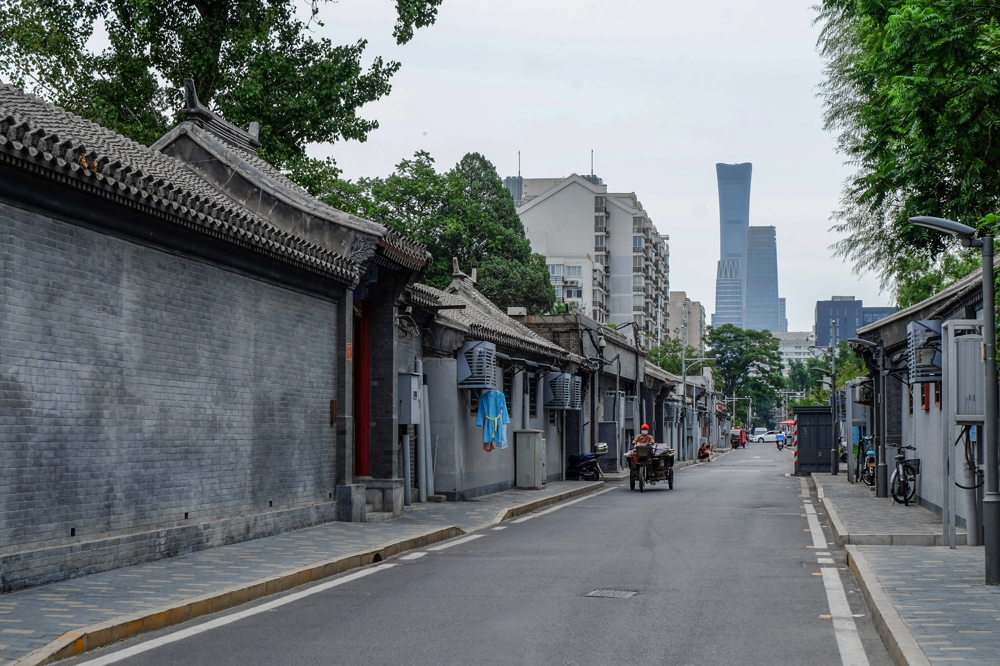

🏠 Hutong Life 胡同生活
Narrow lanes breathe between grey brick walls. Morning voices echo from courtyards — a kettle whistling, a bicycle bell, a sparrow on a wire. Time here folds softly, carrying both the scent of coal dust and blooming jujube trees. The rhythm of the hutong is the rhythm of return.